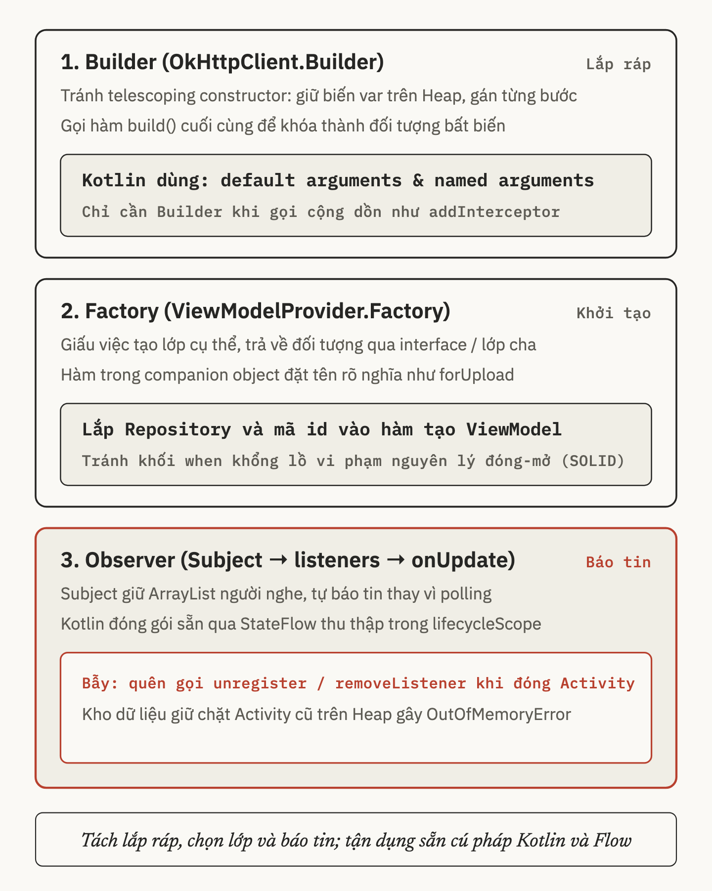

"Builder, Factory, Observer"
Bản 30 giây
Bạn hay gặp ba việc: tạo đối tượng nhiều tham số, chọn lớp con tùy điều kiện và báo tin khi dữ liệu đổi. Builder lắp từng tham số rõ tên, Factory giấu việc tạo lớp để trả về kiểu chung, còn Observer giữ danh sách người nghe. Trong Kotlin hiện đại, nhiều chỗ bạn dùng thẳng tham số mặc định hoặc StateFlow thay vì tự gõ lại các lớp này.
Cần biết trước
Vấn đề buộc nó ra đời
Đầu thập niên 1990, các dự án C++ và Smalltalk gặp ba rắc rối lặp đi lặp lại. Thứ nhất là hàm khởi tạo hình ống kính (telescoping constructor) khi một lớp có nhiều tham số tùy chọn nối đuôi nhau. Lúc gọi hàm, lập trình viên rất dễ truyền nhầm thứ tự hai biến cùng kiểu Boolean.
Thứ hai là các câu lệnh khởi tạo trực tiếp rải rác khắp nơi khiến nơi gọi dính cứng vào lớp cụ thể. Còn nếu để giao diện hỏi thăm (polling) dữ liệu liên tục thì vừa tốn CPU vừa chậm nhịp.
Năm 1994, nhóm Gang of Four (Gamma, Helm, Johnson, Vlissides) xuất bản sách Design Patterns tổng hợp 23 mẫu thiết kế. Trong đó, Builder, Factory Method và Observer trở thành ba viên gạch nền tảng cho thư viện chuẩn Java và khung sườn Android.
Nó thực sự là cái gì
Ba mẫu thiết kế này không phải là những quy tắc bắt buộc mọi dự án phải viết đủ từng lớp như sách giáo khoa. Thực chất, nhiều mẫu trong sách năm 1994 sinh ra để bù đắp cho những thiếu hụt cú pháp của C++ và Java cũ. Sang Kotlin, tham số mặc định (default arguments) và tham số đặt tên đã thay phần lớn Builder, còn StateFlow đóng gói sẵn Observer.
Cơ chế

Với Builder (như AlertDialog.Builder hay OkHttpClient.Builder), đối tượng tạm trên Heap giữ biến var rồi build() khóa thành đối tượng bất biến. Với Factory (như ViewModelProvider.Factory), hàm tạo nhận yêu cầu rồi trả về đối tượng qua một interface hoặc lớp cha chung nhờ tính đa hình. Với Observer, đối tượng phát tin (Subject) giữ danh sách người nghe (listeners), và gọi hàm onUpdate của từng người nghe khi dữ liệu đổi.
Đánh đổi
Ba mẫu này giúp tách nơi gọi khỏi cách khởi tạo phức tạp và đưa dữ liệu tự chảy tới giao diện. Đổi lại, tự viết Builder làm số dòng code tăng gấp đôi và tốn thêm một đối tượng tạm trên Heap mỗi lần khởi tạo. Với Observer, danh sách của Subject giữ tham chiếu mạnh tới người nghe, nên quên hủy đăng ký sẽ gây rò rỉ bộ nhớ.
Nguyên lý gốc
Tách rời việc lắp ráp, chọn lớp khởi tạo và báo tin thay đổi ra khỏi nơi sử dụng để các khối không trói nhau.
Key insight
Mẫu thiết kế không phải luật phải viết đủ lớp; trong Kotlin, tự viết
Buildercho lớp vài trường thường chỉ là code thừa.
Khuôn mẫu chuẩn
// Minh họa Factory bằng companion object và thay Builder bằng named arguments
data class RequestConfig(
val url: String,
val timeoutMs: Long = 5_000L,
val retryOnFailure: Boolean = true
) {
companion object {
fun forUpload(url: String) = RequestConfig(
url = url, timeoutMs = 30_000L, retryOnFailure = false
)
}
}
Bẫy & ranh giới
Bẫy phổ biến của người mới sang Kotlin là viết nguyên lớp Builder dài 50 dòng cho một data class chỉ có 4 trường. Bẫy thứ hai nằm ở Observer tự viết: nếu Activity quên gọi unregister khi đóng, kho dữ liệu sẽ giữ Activity cũ gây OutOfMemoryError. Ngoài ra, đừng dồn mọi việc khởi tạo vào một hàm Factory có khối when khổng lồ. Làm vậy khiến mỗi lần thêm lớp mới bạn lại phải sửa hàm đó, vi phạm nguyên lý đóng-mở trong SOLID.
Câu hỏi thực chiến
Hỏi: Trong Kotlin đã có tham số mặc định và tham số đặt tên rồi thì mẫu Builder có còn chỗ dùng không?
Vẫn còn, nhưng chỉ dùng cho vài trường hợp đặc biệt. Bạn vẫn cần Builder khi một thuộc tính gọi cộng dồn nhiều lần (như addInterceptor trong OkHttpClient.Builder), hoặc khi cần tương thích với Java.
Hỏi: Vì sao mẫu Observer truyền thống dùng addListener và removeListener lại hay gây rò rỉ bộ nhớ trên Android?
Vì đối tượng phát tin giữ một danh sách ArrayList chứa tham chiếu trực tiếp tới từng Listener. Nếu Listener giữ biến trỏ tới Activity mà bạn quên gọi removeListener khi thoát, bộ thu gom rác sẽ không xóa được màn hình cũ. Trên Android, bạn nên dùng StateFlow thu thập trong lifecycleScope để tự hủy đăng ký khi màn hình đóng.
Hỏi: ViewModelProvider.Factory trong Android giải quyết bài toán gì mà hệ thống không tự gọi new ViewModel() luôn được?
Hệ thống Android tự giữ ViewModel qua các đợt xoay màn hình, nên mặc định chỉ biết gọi hàm khởi tạo rỗng. Khi ViewModel cần nhận thêm Repository hoặc mã id, bạn phải đưa cho hệ thống một Factory để chỉ cách lắp các tham số đó.
Hỏi: Viết hàm tạo tĩnh trong companion object có lợi thế gì hơn so với dùng hàm khởi tạo constructor thông thường?
Hàm trong companion object đặt được tên rõ nghĩa như forUpload, giúp người đọc hiểu ngay mục đích mà không phải đoán qua tham số. Hơn nữa, constructor luôn tạo đối tượng mới, còn hàm Factory có thể trả về đối tượng từ bộ nhớ đệm hoặc một lớp con.
Ý bắt buộc khi giải thích lại
- Giải thích được ba nỗi đau gốc: hàm khởi tạo nhiều tham số dễ nhầm thứ tự (Builder), nơi gọi dính cứng vào lớp cụ thể khi khởi tạo (Factory), và việc phải chủ động hỏi thăm khi dữ liệu đổi (Observer).
- Nêu được cách Kotlin thay thế Builder đơn giản bằng default/named arguments và thay thế Observer thủ công bằng StateFlow/Flow.
- Chỉ ra được bẫy rò rỉ bộ nhớ khi quên hủy đăng ký trong danh sách Observer và vai trò của ViewModelProvider.Factory trên Android.
- Viết lại được khuôn mẫu chuẩn từ trí nhớ.
Nguồn
- Catalog of Design Patterns — Refactoring.Guru
- Builder Pattern — Refactoring.Guru
- Factory Method Pattern — Refactoring.Guru
- Observer Pattern — Refactoring.Guru
- Default arguments and named arguments — Kotlin Documentation